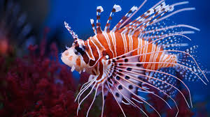

Detail Gambar 2
Lepu atau Ikan singa adalah sekelompok spesies ikan laut yang beracun yang tergabung dalam genus Pterois, Parapterois, Brachypterois, Ebosia atau Dendrochirus dari famili Scorpaenidae. Lepu merupakan spesies predator. Ketika berburu, mereka akan menyudutkan buruannya dengan sirip besarnya dan dengan refleks cepatnya mereka menekan buruannya sekaligus.
Lepu dikenal karena durinya yang panjang dan memiliki warna merah, coklat, oranye, kuning, hitam atau putih berselang-seling.
↠Kembali ke Beranda